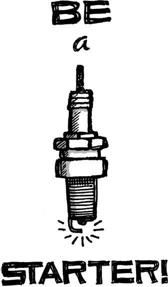

{% include JB/setup %}
{% raw %}
<div>

<h2 id="filepos38944" class="calibre19"><span class="calibre2"><a class="calibre13"></a><strong class="calibre14">Workaholism</strong></span></h2><div class="calibre4"></div>
<p class="calibre7">Our culture celebrates the idea of the workaholic. We hear about people burning the midnight oil. They pull all-nighters and sleep at the office. It's considered a badge of honor to kill yourself over a project. No amount of work is too much work.</p>
<p class="calibre17">Not only is this workaholism unnecessary, it's stupid. Working more doesn't mean you care more or get more done. It just means you work more.</p>
<p class="calibre17">Workaholics wind up creating more problems than they solve. First off, working like that just isn't sustainable over time. When the burnout crash comes--and it will--it'll hit that much harder.</p>
<p class="calibre17">Workaholics miss the point, too. They try to fix problems by throwing sheer hours at them. They try to make up for intellectual laziness with brute force. This results in inelegant solutions.</p>
<p class="calibre17">They even create crises. They don't look for ways to be more efficient because they actually <em class="italic1">like</em> working overtime. They enjoy feeling like heroes. They create problems (often unwittingly) just so they can get off on working more.</p>
<p class="calibre17">Workaholics make the people who don't stay late feel inadequate for "merely" working reasonable hours. That leads to guilt and poor morale all around. Plus, it <a class="calibre16"></a>leads to an ass-in-seat mentality--people stay late out of obligation, even if they aren't really being productive.</p>
<p class="calibre17">If all you do is work, you're unlikely to have sound judgments. Your values and decision making wind up skewed. You stop being able to decide what's worth extra effort and what's not. And you wind up just plain tired. No one makes sharp decisions when tired.</p>
<p class="calibre17">In the end, workaholics don't actually accomplish more than nonworkaholics. They may claim to be perfectionists, but that just means they're wasting time fixating on inconsequential details instead of moving on to the next task.</p>
<p class="calibre17">Workaholics aren't heroes. They don't save the day, they just use it up. The real hero is already home because she figured out a faster way to get things done.</p>
<p class="calibre3"><a class="calibre16"></a></p><div class="calibre4"></div>
</div>

{% endraw %}

